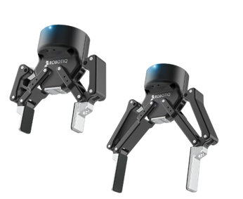
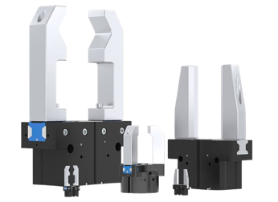
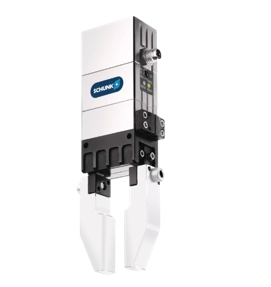
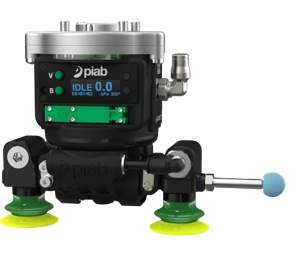

Commercial Comparisons and Intellectual Property Benchmarks
A comprehensive benchmarking of leading industrial end-effectors compared to guide our custom gripper development. Click on any product name to view official details on manufacturer/retail websites.

Upload "market_robotiq.png" to images/

Upload "market_zimmer.png" to images/

Upload "market_schunk.png" to images/

Upload "market_piab.png" to images/
Analysis of relevant intellectual property reveals existing compliance mechanisms, adaptive mechanics, and actuation architectures. Click on a patent title to view its details on Google Patents.
Synthesized insights from commercial solutions and patents compared against our custom end-effector design constraints.